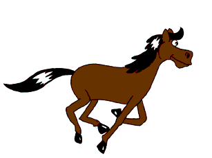

History of Animation
Early Animation & Stop Motion
| Nr. 10 in the reworked second series of Stampfer's stroboscopic discs published by Trentsensky & Vieweg in 1833. |
Hundreds of years before the introduction of true animation, people all over the world enjoyed shows with moving figures that were created and manipulated manually in puppetry, automata, shadow play, and the magic lantern. The multi-media phantasmagoria shows that were very popular in West-European theatres from the late 18th century through the first half of the 19th century, featured lifelike projections of moving ghosts and other frightful imagery in motion.
In 1833, the stroboscopic disc (better known as the phénakisticope) introduced the principle of modern animation with sequential images that were shown one by one in quick succession to form an optical illusion of motion pictures. Series of sequential images had occasionally been made over thousands of years, but the stroboscopic disc provided the first method to represent such images in fluent motion and for the first time had artists creating series with a proper systematic breakdown of movements. The stroboscopic animation principle was also applied in the zoetrope (1866), the flip book (1868) and the praxinoscope (1877). The average 19th-century animation contained about 12 images that were displayed as a continuous loop by spinning a device manually. The flip book often contained more pictures and had a beginning and end, but its animation would not last longer than a few seconds. The first to create much longer sequences seem to have been Charles-Émile Reynaud, who between 1892 and 1900 had much success with his 10- to 15-minute-long Pantomimes Lumineuses.
After earlier experiments by movie pioneers J. Stuart Blackton, Arthur Melbourne-Cooper, Segundo de Chomón, and Edwin S. Porter (among others), Blackton's The Haunted Hotel (1907) was the first huge stop motion success, baffling audiences by showing objects that apparently moved by themselves in full photographic detail, without signs of any known stage trick.
Cel Animation
|  |
| Horse animated in the traditional style. |
Émile Cohl's Fantasmagorie (1908) is the oldest known example of what became known as traditional (hand-drawn) animation. Other great artistic and very influential short films were created by Ladislas Starevich with his puppet animations since 1910 and by Winsor McCay with detailed drawn animation in films such as Little Nemo (1911) and Gertie the Dinosaur (1914). During the 1910s, the production of animated "cartoons" became an industry in the US. Successful producer John Randolph Bray and animator Earl Hurd, patented the cel animation process that dominated the animation industry for the rest of the century. Felix the Cat, who debuted in 1919, became the first animated superstar.
In 1928, Steamboat Willie, featuring Mickey Mouse and Minnie Mouse, popularized film with synchronized sound and put Walt Disney's studio at the forefront of the animation industry. The enormous success of Mickey Mouse is seen as the start of the golden age of American animation that would last until the 1960s. The United States dominated the world market of animation with a plethora of cel-animated theatrical shorts. Several studios would introduce characters that would become very popular and would have long-lasting careers
Technique
Traditional animation (also called cel animation or hand-drawn animation) was the process used for most animated films of the 20th century. The individual frames of a traditionally animated film are photographs of drawings, first drawn on paper. To create the illusion of movement, each drawing differs slightly from the one before it. The animators' drawings are traced or photocopied onto transparent acetate sheets called cels, which are filled in with paints in assigned colors or tones on the side opposite the line drawings. The completed character cels are photographed one-by-one against a painted background by a rostrum camera onto motion picture film.
3D Animation
The so-called 3D style, more often associated with computer animation, has become extremely popular since Pixar's Toy Story (1995), the first computer-animated feature in this style. Most of the cel animation studios switched to producing mostly computer animated films around the 1990s, as it proved cheaper and more profitable. Not only the very popular 3D animation style was generated with computers, but also most of the films and series with a more traditional hand-crafted appearance, in which the charming characteristics of cel animation could be emulated with software, while new digital tools helped developing new styles and effects.
Technique
3D animation is digitally modeled and manipulated by an animator. The 3D model maker usually starts by creating a 3D polygon mesh for the animator to manipulate. A mesh typically includes many vertices that are connected by edges and faces, which give the visual appearance of form to a 3D object or 3D environment. Sometimes, the mesh is given an internal digital skeletal structure called an armature that can be used to control the mesh by weighting the vertices. This process is called rigging and can be used in conjunction with key frames to create movement. Other techniques can be applied, mathematical functions (e.g., gravity, particle simulations), simulated fur or hair, and effects, fire and water simulations.These techniques fall under the category of 3D dynamics.